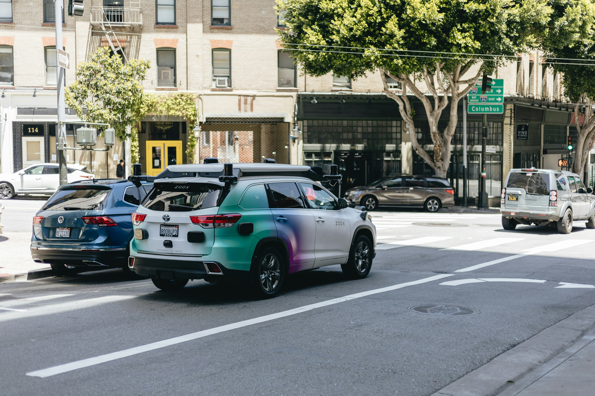
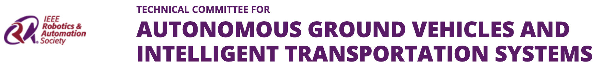

About the workshop
Recently, intelligent perception and navigation techniques have obtained wide attention areas of autonomous robots and systems. Autonomous robots and systems capable of conquering well and partially-structured environments are emerging. As we look to the future, robots that are capable of operating in genuinely unstructured and dynamic environments remain a significant challenge. In such challenging environments, each robot is expected to learn/adapt their surrounding environment via intelligent sensors (such as optical, vision or acoustic sensors) while performing goal-oriented navigation and completing the task with only onboard resources. On top of single robot autonomy, diverse capabilities of heterogeneous robots are brought together to achieve enhanced performance in task planning, cooperative teaming, planetary exploration. Heterogeneous robots and systems can be evident as physical difference between robots (UAV, UGV, USV, Autonomous Vehicles, etc.) or as behavioral difference when robots serve diverse roles in a cooperating team.
Speakers
Program
The workshop will feature prominent speakers, and contributions from the intelligent vehicles and mobile robotics community. The workshop is happening in-person at ADNEC in Abu Dhabi, UAE. Additionally we welcome participants to listen and contribute virtually via zoom.
| Time (CET) | Talk Title | Speaker |
|---|---|---|
| 08:50-09:00 | Welcome & Opening Remarks | Johannes Betz |
| 09:00-09:30 | Talk 1 | Speaker 1 |
| 09:30-10:00 | Talk 2 | Speaker 2 |
| 10:00-10:30 | Talk 3 | Speaker 3 |
| 10:30-11:00 | Coffee Break & Poster Session | |
| 11:00-11:30 | Talk 4 | Speaker 4 |
| 11:30-12:00 | Talk 5 | Speaker 5 |
| 12:00-12:30 | Talk 6 | Speaker 6 |
| 12:30-13:00 | Talk 7 | Speaker 7 |
| 13:00-13:10 | Goodbye & Closing Remarks | Johannes Betz |
| 13:10-14:00 | Lunch |
Call for Papers & Presentations
This workshop is intended to identify the challenges associated with the software development of autonomous vehicles and to foster discussion about how current research can address them. We invite papers for submission to the workshop related to the topics listed below. Position papers, work in progress and novel but not necessarily thoroughly worked out ideas are encouraged. The submissions will be reviewed by the workshop's program committee and will undergo a thorough review process. Accepted paper will be made available on the website and the authors are invited to present their work in a pitch presentation and in our poster session.
Topics of Interest
- Intelligent Transportation Systems
- Intelligent vehicle simulation and modeling
- Autonomous mobile system navigation and path planning
- Motion planning in unstructured and dynamic environments
- Behavioral modeling and learning
- Cooperative autonomous systems and multi-agent systems
- Perception: Detection, tracking and classification
- Real-time perception and sensor fusion
- 3D Modeling and reconstruction
- Enhanced mobility and adaptability:
Submission Format
3-6 pages, including references. The paper should be in PDF format and use the standard IEEE IROS Conference template.Important Dates
- Submission site opens: Augst 1st, 2024
- Submission deadline: September 25th, 2024 (AoE)
- Notice of Acceptance: October 4th, 2024 (AoE)
Organizers


Assistant Professor
Department of Mobility Systems Engineering
Technical University of Munich
"Autonomous Ground Vehicles and Intelligent Transportation Systems"
